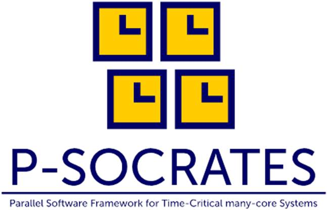

The P-SOCRATES Project
P-SOCRATES (Parallel Software Framework for Time-Critical Many-core Systems) was a European project intended to allow current and future applications with high-performance and real-time requirements to fully exploit the huge performance opportunities brought by the most advanced many-core processors, whilst ensuring a predictable performance and maintaining (or even reducing) development costs of applications.
The purpose of P-SOCRATES was to develop an entirely new design framework, from the conceptual design of the system functionality to its physical implementation, to facilitate the deployment of standardized parallel architectures in all kinds of systems. This framework was released under the brand of UpScale SDK.
The SDK includes the following components:
The scientific and technical work done in the P-SOCRATES project was published in the open access book “High-Performance and Time-Predictable Embedded Computing”.
The topics discussed in the book include:
A short summary of the project can be found here.
Contact for further information
Prof. Luis Miguel Pinho
(LMP@isep.ipp.pt)
This project has received funding from the European Union Seventh Framework Programme for research, technological development and demonstration under grant agreement no 611016